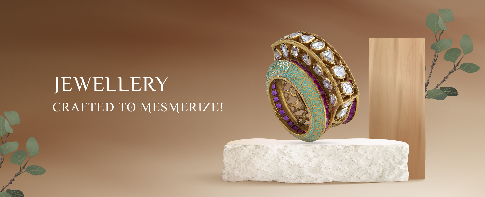

<!-- write this in ngb carousel [showNavigationArrows]="true" 
    [showNavigationIndicators]="false" [interval]="3000" [keyboard]="true"
      [pauseOnHover]="true" [wrap]="true" [activeId]="'secondSlide'" (slide)="slideActivate($event)"-->

<div class="home-carousel">
  <ngb-carousel #carousel id="carouselContainer" [showNavigationArrows]="false" [showNavigationIndicators]="false">

    <ng-template ngbSlide id="one">
      <div class="picsum-image-wrapper">
        
      </div>
      <div class="carousel-caption">
    
      </div>
    </ng-template>

    <ng-template ngbSlide id="two">
      <div class="picsum-image-wrapper">
        
      </div>
      <div class="carousel-caption">

      </div>
    </ng-template>
  </ngb-carousel>
</div>


<div class="justify-contet-centr" id="carouselButtoms">
  <button mat-icon-button type="button" (click)="previousStep()">
    <mat-icon>arrow_back_ios</mat-icon>
  </button>
  <button mat-icon-button type="button" (click)="nextStep()">
    <mat-icon>arrow_forward_ios</mat-icon>
  </button>
</div>